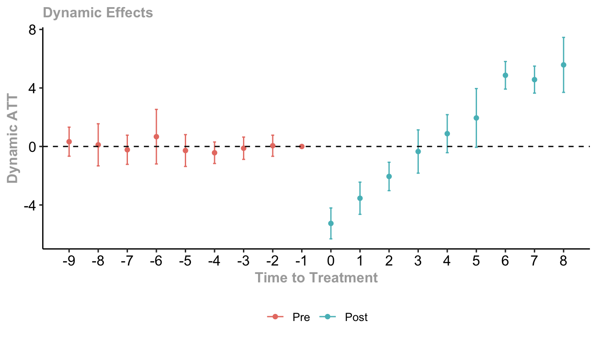

Basics of DiD
What is DiD?
Difference-in-differences (DiD) is a causal identification strategy that can help us estimate causal effects, and go from correlation to causation.
For an example, let us consider the famous paper by Card and Kreuger (1993).
- Context: New Jersey increased its minimum wage in April of 1992.
- Question: How did raising the minimum wage affect the employment rates at fast-food restaurants?
We have data on employment rates in New Jersey in March 1992, before the minimum wage increase, and data from December 1992, after the minimum wage increase. The data looks like this:
Based on this data, it might be tempting to say something like this:
The employment rate in December 1992 is 4 units higher than than the employment rate in March. Thus, the causal effect of the minimum wage increase is 4 units.
However, this would be the wrong conclusion. Why? Well something could have happened between March and December. Perhaps there was a giant country-wide economic boom which caused the increase in employment, which had nothing to do with minimum wage in New Jersey.
Difference-in-differences is a solution to this problem. DiD tells us too look at another state - a state that did not receive the treatment. Nearby Pennsylvania did not increase its minimum wage during this time period. Let us see how their employment rate is doing:

Pennsylvania gives us the trend in employment rate if no minimum wage increase occurred. We then make an assumption - had New Jersey not undergone a minimum wage increase, it would have followed the same trend in employment rates.

Thus, difference-in-differences allows us to estimate the causal effect of a treatment by looking at the trend of an untreated unit, and using that trend to approximate what would have happened if the treatment never occurred.
Parallel Trends Assumption
The key assumption behind DiD is the parallel trends assumption - that indeed, New Jersey would have followed the same trend as Pennsylvania, had New Jersey not had the minimum wage increase. Or in the figures above, that New Jersey would have indeed followed the dotted purple line trend if it had not had a minimum wage increase.
More generally, the parallel trends assumption says that if the treated units had been hypothetically untreated, they would have followed the same trend in the outcome variable as the untreated units.
What can go wrong when parallel trends is violated? Consider the same example above, but somehow, we were able to magically see what really happened to New Jersey without a minimum wage increase. Let us pretend that New Jersey alone (and not Pennsylvania) suffered from some mighty economic crash.

We can see that in this scenario, the true New Jersey trend (solid purple) is not parallel to the Pennsylvania trend. Thus, if we were to assume the Pennsylvania trend on the New Jersey trend (dotted purple), our estimate of the causal effect would be wrong.
How do we check the parallel trends assumption? Unfortunately, it is impossible to actually check it, since it involves a hypothetical outcome (New Jersey not getting the minimum wage increase).
However, we often test for parallel trends in the years before the treatment starts (pre-treatment periods). The idea is that if there are parallel trends for several years before the start of treatment, then it is likely to continue into the treatment period.
We can also control for covariates (other variables) that we believe might cause violations in parallel trends. Typically covariates that cause violations of parallel trends are:
- Correlated with the outcome variable.
- Have different trends in the untreated and treated groups.
ATT and Dynamic Effects
The main causal effect of interest in DiD is the average treatment effect on the treated (ATT). This is the causal effect of treatment on units that receive the treatment.
- Important! This is not the same as the average treatment effect (ATE). That applies to all units, including untreated units. The ATT only applies to treated units, and cannot easily be generalised to untreated units.
We are often also interested in what is called dynamic treatment effects. These are essentially ATT estimates for every year in our data.
For example, let us say that after New Jersey legalised minimum wage, we continued to observe the employment rates for the next 5 years (as well as those in Pennsylvania). We can then create dynamic treatment effects for each of the next 5 years - which will help us visualise how the treatment effects change over time.
Dynamic treatment effects are also not only limited to the post-treatment period. If we had data before the treatment took place, we could also calculate dynamic treatment effects for each period. This is useful because we can use this to test for parallel trends.
This is because we shouldn’t expect the treatment and control groups to differ in their pre-treatment trends if parallel trends is met, and thus, the treatment effect should be 0 or close to 0 in the pre-treatment period. if this is not the case, then we have evidence that parallel trends is violated.
Staggered and Absorbing
DiD designs can be categorised by two factors: if treatment is staggered and if treatment is absorbing.
Non-staggered treatment means all units that receive the treatment in our study receive it at the same time. For example, in our New Jersey example, all fast food restaurants in New Jersey experienced the minimum wage rise at the same time.
Staggered treatment means units start treatment at different times in our study. This is often the case when we are studying multiple states - where some states begin some treatment earlier than others.
Absorbing treatment means units who get treated, always remain treated for the rest of our study. For example, in our New Jersey example, all fast food restaurants in New Jersey who got the minimum wage rise, remained with the higher minimum wage.
Non-Absorbing treatment means units who get treated might return to being untreated. For example, this could happen if New Jersey decides a few years later to lower the minimum wage back to its original level.
These terms will become important when we explore the issues with two-way fixed effects, and why econometricians have spent 2021-onwards trying to solve those issues.